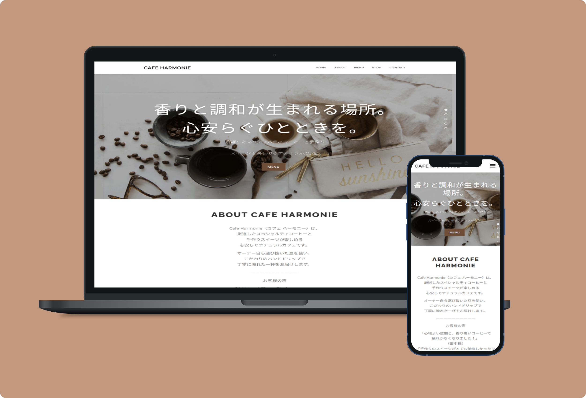
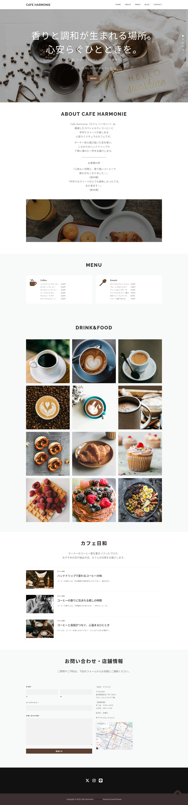
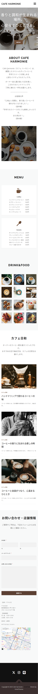

CafeのWEBサイト

概要
カフェの紹介と、オーナーのこだわりを伝えるブログ機能付きWebサイト。
ターゲットは20代〜40代の男女。
テーマである落ち着いた温かみのある、コーヒーにこだわっていることが伝わるようなデザイン。
意識したこと
落ち着きと温かみのある雰囲気を大切にし、コーヒーへのこだわりが伝わるデザインを意識しました。
ブラウンやベージュを基調とした配色で空気感を出し、やさしい読み心地を目指して整えました。
また、オーナーの想いやこだわりを発信できるようブログ機能を取り入れ、長く活用できるサイト構成としました。

